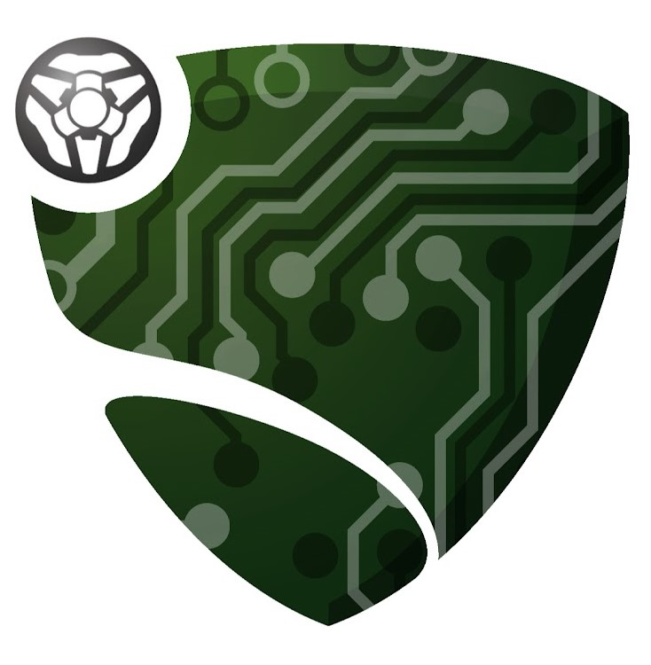

| Name | Clayton Phillips |
| Student Number | s3952384 |
| Student Email | s3952384@student.rmit.edu.au |
| GitHub | https://github.com/Gigiphiliac |
| Background | I was born and raised in Dubbo, NSW until August 2013 when my family moved to Krasnoyarsk, Russia for three years. When we moved back to Australia, we wanted to live somewhere new, so my parents went and visited the Bega Valley which impressed them enough to make it our home. I started at school in the last term of year 7 and finally graduated in 2021. I'm a fluent English speaker, and can spit a little bit of Russian. My hobbies are primarily gaming and sport, specifically soccer/futsal and skateboarding. |

What is your interest in IT?
My main interest in IT is the programming and troubleshooting side. Solving my own, or other people's, problems is something I quite enjoy. The satisfaction of creating solutions has motivated me to pursue this degree in the hopes of doing it as my job one day.Was there a particular event or person that sparked your interest?
My father is a graphic designer, my uncle is an animator, and many friends and relatives are avid gamers. Growing up with this exposure to technology got me invested in it from early. Throughout school, I had a passion for any and all STEM classes which also helped me discover and explore my interests.Why did you choose to come to RMIT?
I chose to study with RMIT Online because I was searching for a technology related degree on OUA, and the only ones that really caught my interest were Bachelor of Data Science and Bachelor of Information Technology. After doing some research into the subjects in each course, I determined that the Bachelor of IT taught a wide variety of skills that could help me in whichever field I ended up wanting to pursue.What do you expect to learn during your studies?
By the end of the degree, I expect to have a solid understanding of various technological avenues. I hope the skills and knowledge accrued set me up nicely for my future career, wherever that takes me.
DevOps Engineer
Description
This job involves overseeing the various technologies ConsenSys employs and ensuring the best DevSecOps (development, security, and operations) practices are implemented across the organisation. Development and maintenance of software to optimise productivity in all facets of the business is another primary responsibility. This job appeals to me because it:
- Works heavily with cloud computing using AWS/Azure, something that I find intriguing.
- Involves scripting in languages I enjoy or already want to learn such as Python and NodeJS.
- Is entirely remote; ConsenSys has a team from all over the world as well as offices in major world cities.
- Focuses heavily on work/life balance and flexible working arrangements which I consider very important.
Skills Required
As seen in the job description to the right 👉, this position has an extensive list of qualifications that they highly value, but aren't all required. Some of the ones I need to gain experience with include:
- Ansible/Infrastructure as Code
- Continuous Integration with GitHub
- DevSecOps tools to maintain security and reliability
- Git
Skills I Have
Of the qualifications and experience they have listed, I've got:
- Experience with AWS (official AWS course)
- Experience with scripting using Python (various courses and personal interest projects)
Learning Plan
When I'm learning the advised topics to fit the job's criteria, I think it would be valuable to brush up on my AWS training then undertake the exam to gain the certification, as COVID-19 prevented me from attending one before. Many of the tools listed can be learned through online courses, if we don't already cover them in the Bachelor of IT. My understanding is that any gaps in my knowledge on the job will be filled in by real-time practical work experience. In terms of communication and leadership skills, the Bachelor of IT is set up well to prepare me in that regard.
What do the results of these tests mean for you?
These test results don't mean a whole lot to me, but some of them provide an interesting insight into how I might think.- The Myers-Briggs test says I'm 64% 'turbulent'. This indicates that I would be a better leader than someone who was 'assertive' because they would be more self-confident and conceited, while I'm more likely to be goal-oriented.
- My learning style indicates that I learn just as well hands on as I do seeing examples. This could mean that presentations and practical activities are the optimal way for me to learn.
- This creativity test gave me a 50/100, which may mean that my approach to problem solving is half formulaic, and half creative choice. Perhaps this signifies a need for others' ideas that I can build on.
How do you think these results may influence your behaviour in a team?
In a team environment, my introverted nature may hinder me from being very outspoken, which slightly interferes with my leadership ability. My learning style probably wouldn't affect my team behaviour but if everyone knew each other's styles, group meetings could be optimised for engagement. According to the creativity test, I'm not the most creative individual. For this reason, the team could benefit from someone who has strength in that area.How should you take this into account when forming a team?
When forming a team, I think it is more important to have strong leadership and direction than a group of unguided people whose personality types match on paper. That said, I believe that an appointed leader should take time to identify each member's strengths and weaknesses in order to assign relevant tasks. Especially in this field, creativity and unique points of view are vital for finding an optimal solution. Therefore creative people who are willing to share their ideas are important to the formation of a team.



Overview
Rocket League is a car soccer game developed by Psyonix LLC that is easy to pick up and play, but incredibly difficult to master. I would like to build a bot that is able to play the game at a level much higher than the bots that come built into it. The bot will be hard coded using Python and will respond to certain situations in such a way that makes it much more mechanically consistent than humans. Once created and hosted on GitHub, the bot will be entered into a tournament in which other bots created in the community battle it out for the title of best Rocket League bot.Motivation
I've been playing Rocket League since 2018, and in that time I've made it into the top 1% of players rank wise. Along with this I've noticed a massive discrepancy between the highest difficulty of bots and top human player abilities. I've always wondered when a bot that can pose a challenge to the best of players will be implemented into the game, but after six years, we haven't seen one. Because of this, I would like to have a go at solving this issue myself, and in the process having fun experimenting with the Rocket League API. As this is just a passion project, I don't expect big things to come from it, but I'm always optimistic that the bot-building scene will bring this issue to Psyonix' attention.Description
RLBot is a community organisation that builds and collaborates on bots through GitHub. The group has set up a website that contains links to various GitHub repositories each with support for specific languages. This includes Scratch, Javascript, Python, Rust, Go, C++, and even an environment for building a machine learning bot. Generally, I would like to make a bot that is better than the current ones in the live game. This would mean that players at a higher skill level would be able to play with the bots while actually having a challenge. The more specific goal would be to have a bot that not only was competent on the field mechanically, but also worked well as a teammate. Being able to recognise the trajectory and velocity of teammates and passing the ball perfectly is something that high level players do all the time, but lower ranks don't and this means that these players aren't actually learning how to work with passes. Therefore, not only would a teamplaying bot be a formidable opponent, but also a valuable training tool.The bot will need to interact with Rocket League's physics engine in order to keep up with the game, make predictions regarding the ball's trajectory, and be able to move efficiently in general. Managing boost, powersliding, and conserving momentum are vital gameplay elements that are going to be difficult to teach a bot, but are a necessity. Once the bot is able to understand the flow of the game, I can begin adding specifics such as situational analysis. This will allow the bot to make choices depending on the circumstances in order to maximise its value on the field. For example, passing to an open teammate and shadow-defending (shadowing opponent movements to tackle at the optimal time) would be a priority over diving right in and trying to smack the ball away.
Tools and Technologies
The Rocket League bot community is definitely a niche one, but there are still a lot of dedicated people contributing to the open-source project via GitHub. The software involved in building a bot include:- Code editor (I'll use VSCode)
- Rocket League (Epic Games or Steam)
- RLBotGUI
- Programming language (I'll use Python)